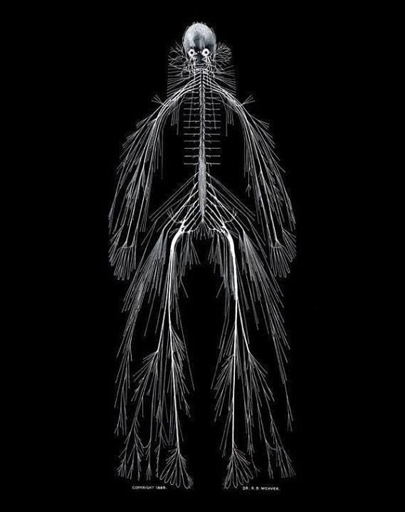

Damos comienzo a la serie más ambiciosa que se me dio por hacer. Arrancando con nada menos que el sistema nervioso. 🧠
Estos artículos no tienen la intención de bombardear información abrumadora. Por lo que serán un poco más "digeridos" y sin entrar en tecnicismos que nos alejen de entender el punto de todo esto que es que todo tiene que ver con todo.💥
—
Existen distintas redes de gran complejidad que abarcan órganos (entre otras cosas) de nuestro cuerpo y que cumplen funciones específicas que frecuentemente posibilitan que otras redes distintas ejecuten también sus propias funciones.
QUÉ ORACIÓN MÁS LARGA.
Hoy vamos a tomar algunas de las muchas redes que hay en juego a la hora de cantar y que se relacionan entre sí en un feedback constante.
Este sistema es el primero y el más importante ya que sin el mismo ninguno de los que siguen funciona. Su función es captar y procesar información para lograr la interacción adecuada entre nuestro cuerpo y el entorno.
Al hacer una actividad voluntaria como cantar necesitamos crear ciertas órdenes desde nuestra "computadora central" que puedan ser ejecutadas con nuestro cuerpo de forma fiel y eficaz.
Esto no es una cosa unidireccional, es decir: lo que el cuerpo termina ejecutando es un feedback para nuestro cerebro que adapta esas órdenes a lo que va pasando y según lo que le estemos pidiendo.
Para eso hay caminos conductuales por los que transitamos para llegar a esos objetivos, estos son producto de un aprendizaje y simplifica la acción a realizar. El asunto a todo esto es qué aprendizaje tiene incorporado y la posibilidad de actualizarlo. Ahí va un ejemplo:
Si quiero cantar una nota aguda y mi cerebro solo conoce una vía para hacerlo (mediante la tensión excesiva de los músculos del cuello, por ejemplo) siempre que reciba la intención consciente de cantar agudo va a ordenar que inconscientemente esos músculos se tensen, y ahí comienza el trabajo de desaprender.
Una imagen dice más que mil palabras: esto es nuestro cuerpo sin huesos, músculos, órganos... etc en fin, solo el sistema nervioso.
Gracias por llegar hasta acá! Si te gusta este contenido podés hacer un aporte por Mercado Pago (alias: alza.tu.voz o a través de este link )
Tu apoyo es importante y valioso, gracias!
Podés enviarme un whatsapp, mail o seguirme en redes sociales en los siguientes links: